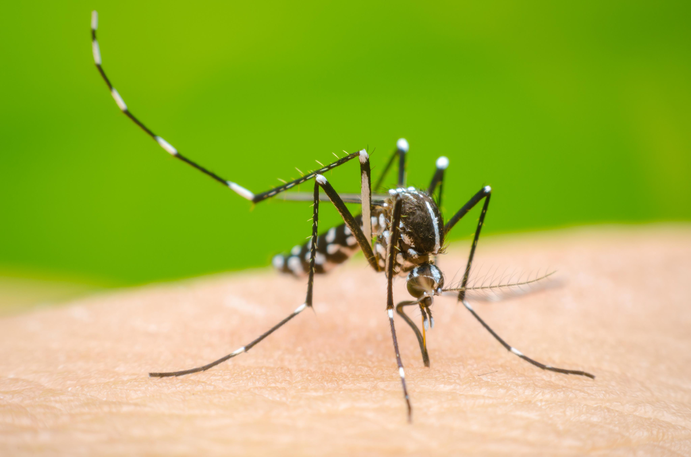

Panamá se encuentra atravesando por una temporada difícil a raíz de la sequía que se vive en el país por escasez de lluvias. El Decreto Ejecutivo 436 establece sanciones para aquellas personas que durante la temporada seca no realicen un uso racional del agua. La entidad hizo un llamado a la población para que tome consciencia y brinde un mejor uso a este recurso, que por el momento es escaso.
Los productores de ganado en la región de Azuero se encuentran preocupados ante las afectaciones que está produciendo la sequía en este rubro. Las lluvias en esta zona son escasas, provocando que los ríos y las quebradas se estén secando, dificultando la siembra de productos propios de la temporada. El ministro del Mida, Augusto Valderrama, señaló que para poder declarar un estado de emergencia se debe contar con información científica además de los recursos para apoyar al sector agropecuario para que se preparen y enfrenten el cambio climático. Agregó que se mantienen a la espera de que la Administración Nacional Oceánica y Atmosférica (NOAA) anuncie el próximo martes 23 de mayo, los resultados de los datos investigados destacando que existe un 85% de probabilidad.
El Ministerio de Salud (Minsa) confirmó que el país acumula 1,661 casos de dengue en lo que va del año. La cifra se desglosa de la siguiente manera: 1,461 casos sin signos de alarma, 193 con signos de alarma y 7 casos de dengue grave. En este 2023 no se ha registrado defunción. Las autoridades sanitarias reiteraron el llamado a la población a continuar con las acciones para mantener limpias las casas y el entorno laboral, a fin de evitar los criaderos del Aedes aegypti, el mosquito transmisor.
